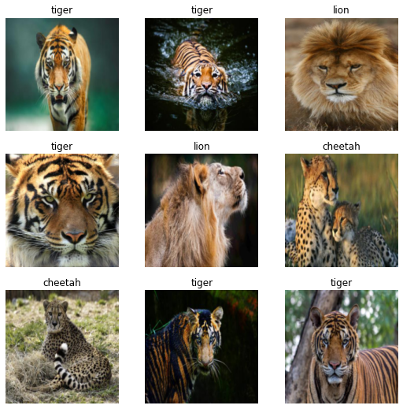

!pip install -Uqq fastai duckduckgo_searchfrom duckduckgo_search import ddg_images
from fastcore.all import *
def search_images(term, max_images=30):
print(f"Searching for {term}")
return L(ddg_images(term, max_results=max_images)).itemgot('image')urls = search_images('cheetah photos', max_images=1)
urls[0]Searching for cheetah photos'http://blog.cincinnatizoo.org/wp-content/uploads/Cheetah-D0036.jpg'from fastdownload import download_url
dest = 'cheetah.jpg'
download_url(urls[0], dest, show_progress=False)
from fastai.vision.all import *
im = Image.open(dest)
im.to_thumb(256,256)download_url(search_images('tiger images', 1)[0], 'tiger.jpg', show_progress=False)
Image.open('tiger.jpg').to_thumb(256, 256)Searching for tiger imagesdownload_url(search_images('lion images', 1)[0], 'lion.jpg', show_progress=False)
Image.open('lion.jpg').to_thumb(256, 256)Searching for lion imagessearches = 'cheetah', 'tiger', 'lion'
path = Path('cheetah_or_not')
from time import sleep
for item in searches:
dest = (path/item)
dest.mkdir(exist_ok=True, parents=True)
download_images(dest, urls=search_images(f'{item} photo'))
sleep(10)
resize_images(path/item, max_size = 400, dest=path/item)Searching for cheetah photo
Searching for tiger photo
Searching for lion photofailed = verify_images(get_image_files(path))
failed.map(Path.unlink)
len(failed)0dls = DataBlock(
blocks = (ImageBlock, CategoryBlock),
get_items = get_image_files,
splitter = RandomSplitter(valid_pct = 0.2, seed = 42),
get_y = parent_label,
item_tfms = [Resize(192,method ='squish')]
).dataloaders(path, bs=32)
dls.show_batch(max_n = 9)
learn = vision_learner(dls,resnet18, metrics=error_rate)
learn.fine_tune(3)/usr/local/lib/python3.7/dist-packages/torchvision/models/_utils.py:209: UserWarning: The parameter 'pretrained' is deprecated since 0.13 and will be removed in 0.15, please use 'weights' instead.
f"The parameter '{pretrained_param}' is deprecated since 0.13 and will be removed in 0.15, "
/usr/local/lib/python3.7/dist-packages/torchvision/models/_utils.py:223: UserWarning: Arguments other than a weight enum or `None` for 'weights' are deprecated since 0.13 and will be removed in 0.15. The current behavior is equivalent to passing `weights=ResNet18_Weights.IMAGENET1K_V1`. You can also use `weights=ResNet18_Weights.DEFAULT` to get the most up-to-date weights.
warnings.warn(msg)| epoch | train_loss | valid_loss | error_rate | time |
|---|---|---|---|---|
| 0 | 1.581225 | 0.469961 | 0.187500 | 00:00 |
| epoch | train_loss | valid_loss | error_rate | time |
|---|---|---|---|---|
| 0 | 0.772286 | 0.240513 | 0.125000 | 00:00 |
| 1 | 0.429333 | 0.085089 | 0.000000 | 00:00 |
| 2 | 0.289199 | 0.067679 | 0.000000 | 00:00 |
is_cheetah,_,probs = learn.predict(PILImage.create('cheetah1.png'))
print(f"This is a {is_cheetah} {probs[0]}")This is a cheetah 0.9688272476196289